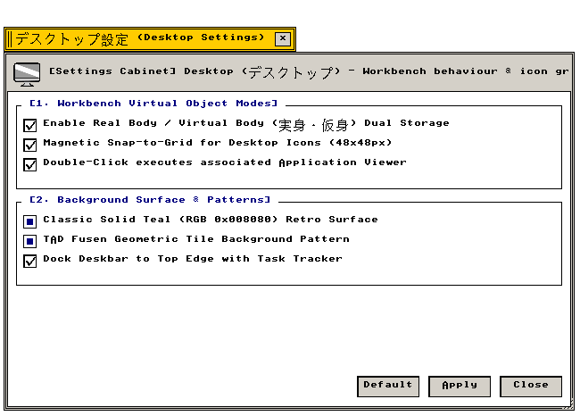

デスクトップ設定 (Desktop)
ワークベンチ環境 · 実身スナップグリッド · 自動整列 · 多重作業空間
ワークベンチ空間挙動、実身配置グリッド、壁紙描画、マルチワークスペースの設定仕様
"Spatial filing parameters, hypermedia real-object alignment matrices, and multi-workspace desktop topologies."
← 設定フォルダ (Settings Folder Index)
デスクトップ設定（Desktop） — ワークベンチデスクトップの空間配置モデル、実身アイコンの自動整列グリッド、壁紙描画、マルチワークスペースを管理する設定アプレット。
"Desktop space management: configuring real-object Euclidean snap grids, background plates, and multi-workspace contexts."
画面プレビュー (Screen Preview)

実機描画フレームバッファより自動抽出された透過デスクトップ設定ウィンドウ (Native Headless GDEV Capture)
概要 (Overview)
ワークベンチデスクトップの空間配置モデル、実身アイコンの自動整列グリッド、壁紙描画、マルチワークスペースを管理する設定アプレット。
"Desktop space management: configuring real-object Euclidean snap grids, background plates, and multi-workspace contexts."
基本操作仕様 (Operational Specifications)：
・[標準 (Default)]：工場出荷時の初期設定に復元します。
・[適用 (Apply)]：設定変更を確定し、システム状態へ反映します。
・[閉じる (Close)]：設定ウィンドウを破棄します（cls_wnd()）。
1. 実身スナップグリッドと自動整列 (Spatial Snap Grid & Auto-Arrange)
デスクトップ上に配置される実身・仮身アイコンの吸着グリッドおよび自動整列パラメータの設定仕様。
"Euclidean snap grid thresholds and automated spatial reordering for pinned Real and Virtual Objects."
| 設定項目・機能名 |
動作概要と視覚仕様 (Functional Specification) |
技術仕様・幾何学構造 (Technical / C99 Definition) |
Enable Spatial Real Object Snap Grid
実身スナップグリッド有効化 |
アイコン移動時に最寄りのグリッド交点へ自動吸着し、整然とした配置を維持します。 |
グリッド間隔: X=32px, Y=32px
C99: g_state_desktop.checks[0] |
Auto-Arrange Pinned Workbench V-Objects
仮身アイコン自動整列 |
新規作成またはピン留めされた仮身アイコンを左上から順に空きスロットへ自動配置します。 |
整列アルゴリズム: 左上基点ラスタースキャン
C99: g_state_desktop.checks[1] |
Draw Shadow Plate on Pinned Icons
アイコン影板描画 |
デスクトップアイコンの下部に半透明の影板を描画し、背景画像上の視認性を確保します。 |
影板色: COLOR_DKGRAY (透過合成)
C99: g_state_desktop.checks[2] |
2. 壁紙および作業空間管理 (Wallpaper & Multi-Workspace)
背景プレートの描画モードおよび複数の独立した作業空間（ワークベンチ 1〜4）の設定仕様。
"Background surface rendering modes and virtual workspace switching contexts for multi-task isolation."
| 設定項目・機能名 |
動作概要と視覚仕様 (Functional Specification) |
技術仕様・幾何学構造 (Technical / C99 Definition) |
Enable Active Wallpaper Background Plate
アクティブ壁紙描画 |
単色背景（COLOR_TEAL等）の代わりに、指定されたTADグラフィックス実身を背景として展開します。 |
背景エンジン: TAD図形描画プリミティブ
C99: g_state_desktop.checks[3] |
Show Multi-Workspace Desktop Selector
多重ワークスペースセレクタ |
画面隅にワークベンチ1〜4の切替プレートを表示し、作業コンテキストを瞬時に切り替えます。 |
空間数: 最大4面独立コンテキスト
C99: g_state_desktop.checks[4] |
3. 全設定パラメータ仕様一覧 (Configuration Parameter Specifications)
デスクトップ設定が提供するすべての設定要素、初期値、およびC99内部シンボル。
"Comprehensive parameter specification table: indexing all UI widget states, factory defaults, and underlying C99 data symbols."
| セクション |
パラメータ名 / UI要素 |
標準値 (Default) |
設定値 / 選択肢 |
C99 内部変数・シンボル |
| [1] グリッド整列 |
Spatial Snap Grid |
有効 (TRUE) |
チェックボックス |
g_state_desktop.checks[0] |
| [1] グリッド整列 |
Auto-Arrange V-Objects |
有効 (TRUE) |
チェックボックス |
g_state_desktop.checks[1] |
| [1] グリッド整列 |
Draw Shadow Plate |
有効 (TRUE) |
チェックボックス |
g_state_desktop.checks[2] |
| [2] 壁紙・空間 |
Active Wallpaper Plate |
有効 (TRUE) |
チェックボックス |
g_state_desktop.checks[3] |
| [2] 壁紙・空間 |
Multi-Workspace Selector |
有効 (TRUE) |
チェックボックス |
g_state_desktop.checks[4] |
| アクション制御 |
[ 標準 (Default) ] |
— |
初期設定へ復元 |
全フラグTRUEリセット |
| アクション制御 |
[ 適用 (Apply) ] |
— |
変更確定と再描画 |
is_dirty = FALSE, redraw_all_windows() |
| アクション制御 |
[ 閉じる (Close) ] |
— |
ウィンドウ破棄 |
cls_wnd(wnd) |
関連コンポーネント (Related Components)